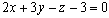
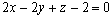
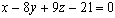

3. ЭЛЕМЕНТЫ АНАЛИТИЧЕСКОЙ ГЕОМЕТРИИ
ЗАНЯТИЕ 3.1. ПЛОСКОСТЬ В ТРЕХМЕРНОМ ПРОСТРАНСТВЕ
Контрольные вопросы
- Написать векторное уравнение плоскости и объяснить смысл величин, входящих в
это уравнение.
- Написать общее уравнение плоскости и уравнение плоскости, проходящей через заданную
точку. Объяснить смысл величин, входящих в это уравнение.
- Как вычислить угол между плоскостями? Условия параллельности и перпендикулярности
двух плоскостей.
Задачи
- Построить плоскости:
а) ,
б) ,
в) , г) .
- Построить плоскость и найти углы нормали к плоскости с
осями координат.
- Даны точки М1 ( 0; - 1; 3 ) и М2 ( 1; 3; 5 ). Написать уравнение плоскости,
проходящей через точку М1 и перпендикулярной к вектору .
- Написать уравнение геометрического места точек, равноудаленных от
точек
А ( 3;  ; 3 ) и В ( 0;
; 0 ).
; 3 ) и В ( 0;
; 0 ).
- Написать уравнение плоскости, проходящей через ось Ох и
точку
М1 ( 0; - 2; 3 ).
- Найти угол между плоскостями:
а)  и ,
и ,
б) и ,
в) и ,
г)  и .
- Написать уравнение плоскости, проходящей через точку М1 (- 1; - 1; 2 )
и перпендикулярной к плоскостям
и
.
- Написать уравнение плоскости, проходящей через точки М1 ( - 1; - 2; 0 )
и М2 ( 1; 1; 2) и перпендикулярной
к плоскости .
- Найти расстояние от точки М ( 5; 1; - 1 ) до плоскости .
- Найти расстояние точки М ( 4; 3; 0 ) от плоскости, проходящей через точки
М1 ( 1; 3; 0), М2 ( 4; - 1; 2 ) и М3 ( 3; 0; 1 ).
- Найти расстояние между параллельными плоскостями
и
.
- Написать уравнение плоскости, проходящей через линию пересечения
плоскостей
и
и через точку М(1; 2; 4).
- Найти точку пересечения плоскостей
,
, .
- Написать уравнение плоскости, проходящей через точки М1 ( 0; - 5; 0 ), М2 ( 0; 0; 2 )
и перпендикулярной
к плоскости .
Построить ее.
Ответы
-
- ;
- ;
- ;
- ;
- а) , б) ,
в) , г) ;
- ;
-  ;
- 3;
- ;
- ;
-  ;
- ( 1; - 1; 2 );
- .